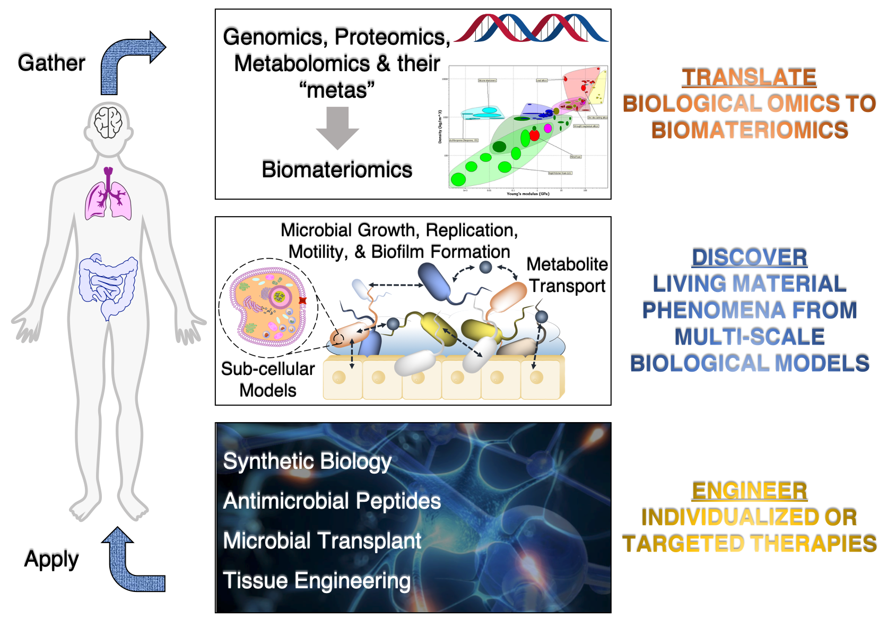

From biological “circuits” for microbial computations to self-healing concrete and hydrogels infused with living bacteria,
synthetic microbiology allows scientists to re-imagine materials by hybridizing the animate with the inanimate.
By analysing and tweaking the biological functions of a whole host of microbes, scientists can customize the dynamics and
structures of microbial consortia to create living materials, paving the way toward spatiotemporally
dynamic architectures that adapt their physical and biochemical properties according to their environment. Through this
approach, one can imagine the future of biomaterial engineering, including
- Customized microbes that produce and deliver therapeutic metabolites directly in a patient's skin or gut
- Manipulating microbial biofilm formation for altered mechanical and structural properties with selective permeability
- “Circular” materials that are produced, self-assembled, and degraded microbially
- Biopolymeric composites that re-organize their properties in concert with spatiotemporal alterations in the microbial
consortia
- Biological or bio-inspired soft robotics
The precise engineering of such living materials exists at the intersection of biological, material, and mechanical
engineering. Therefore, we seek to establish a computational platform to assemble material microbiomes.
Through numerical methods, including genome-scale models, flux balance analysis, and agent-based modelling, we translate
biological omics data into biomateriomics input. We then discover living material phenomena through multiscale computational
simulations. From this platform, we will engineer and predict the structural, mechanical, and biochemical behavior
of diverse microbial consortia, leading to the formation of dynamically-responsive biomaterials.
To achieve Our Vision of developing soft, adaptive,and responsive biomaterials
at a low cost, we must overcome challenges in developing dynamic responsiveness while being biodegradable, biocompatible,
and bioresorbable. These biomaterials may also be processed with high temperatures and pressures, harsh solvents, and
multi-step chemical processes. These complexities pose a critical research question. Can we rationally design
next-generation biomaterials to precisely obtain the properties and functions that we want?
To address this problem, we deploy bio-inspired, bottom-up, computational design. We harness polymeric
design principles developed by Nature and combine multiscale modeling with high throughput simulations to rapidly test
and validate the properties of these materials for implementation. Our long-term goal is to integrate all the elements
required for a single, cohesive, multiscale platform. This platform will perform fast structure prediction for a
given polymeric sequence using advanced sampling methods. It can then determine a wide range of mechanical, optical, and
electrical properties from these structures. Most crucially, it can incorporate any combinations of these external stimuli
and make a holistic prediction of the dynamic responses of the biomaterial to capture its performance in a realistic
manner, thereby deriving fully predictive sequences, structures, and functions.
 Fringilla nisl. Donec accumsan interdum nisi, quis tincidunt felis sagittis eget. tempus euismod. Vestibulum ante ipsum primis in faucibus vestibulum. Blandit adipiscing eu felis iaculis volutpat ac adipiscing accumsan eu faucibus. Integer ac pellentesque praesent tincidunt felis sagittis eget. tempus euismod. Vestibulum ante ipsum primis in faucibus vestibulum. Blandit adipiscing eu felis iaculis volutpat ac adipiscing accumsan eu faucibus. Integer ac pellentesque praesent. Donec accumsan interdum nisi, quis tincidunt felis sagittis eget. tempus euismod. Vestibulum ante ipsum primis in faucibus vestibulum. Blandit adipiscing eu felis iaculis volutpat ac adipiscing accumsan eu faucibus. Integer ac pellentesque praesent tincidunt felis sagittis eget. tempus euismod. Vestibulum ante ipsum primis in faucibus vestibulum. Blandit adipiscing eu felis iaculis volutpat ac adipiscing accumsan eu faucibus. Integer ac pellentesque praesent. Blandit adipiscing eu felis iaculis volutpat ac adipiscing accumsan eu faucibus. Integer ac pellentesque praesent tincidunt felis sagittis eget. tempus euismod. Vestibulum ante ipsum primis in faucibus vestibulum. Blandit adipiscing eu felis iaculis volutpat ac adipiscing accumsan eu faucibus. Integer ac pellentesque praesent.
Fringilla nisl. Donec accumsan interdum nisi, quis tincidunt felis sagittis eget. tempus euismod. Vestibulum ante ipsum primis in faucibus vestibulum. Blandit adipiscing eu felis iaculis volutpat ac adipiscing accumsan eu faucibus. Integer ac pellentesque praesent tincidunt felis sagittis eget. tempus euismod. Vestibulum ante ipsum primis in faucibus vestibulum. Blandit adipiscing eu felis iaculis volutpat ac adipiscing accumsan eu faucibus. Integer ac pellentesque praesent. Donec accumsan interdum nisi, quis tincidunt felis sagittis eget. tempus euismod. Vestibulum ante ipsum primis in faucibus vestibulum. Blandit adipiscing eu felis iaculis volutpat ac adipiscing accumsan eu faucibus. Integer ac pellentesque praesent tincidunt felis sagittis eget. tempus euismod. Vestibulum ante ipsum primis in faucibus vestibulum. Blandit adipiscing eu felis iaculis volutpat ac adipiscing accumsan eu faucibus. Integer ac pellentesque praesent. Blandit adipiscing eu felis iaculis volutpat ac adipiscing accumsan eu faucibus. Integer ac pellentesque praesent tincidunt felis sagittis eget. tempus euismod. Vestibulum ante ipsum primis in faucibus vestibulum. Blandit adipiscing eu felis iaculis volutpat ac adipiscing accumsan eu faucibus. Integer ac pellentesque praesent.

{kind=link}
{kind=link}
{kind=link}